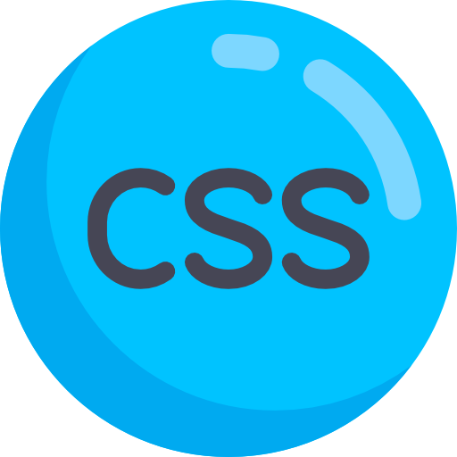
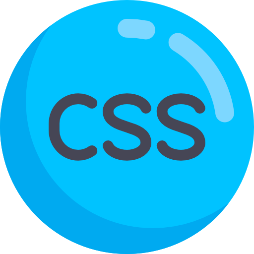
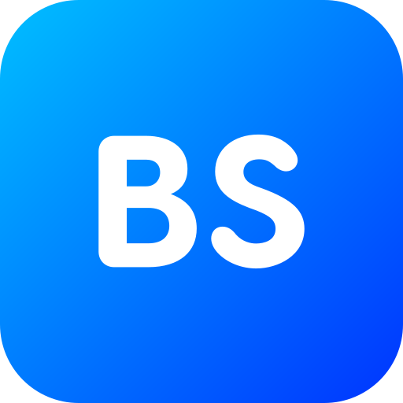
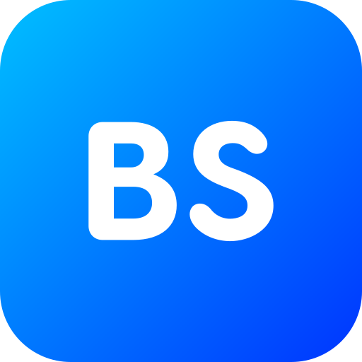

ABOUT
During my academic tenure, I have gained foundational knowledge in [mention relevant skills or courses]. Additionally, I have completed internships/projects that have helped me develop a strong understanding of [specific skills or work areas related to the job you're applying for]. I am confident that my abilities and my willingness to learn will allow me to add value to your team.
Education:
M.sc-2024,KUB.sc-2022,KU
Strengths:
Decision making skills,Adaptability,
Team Player
Languages known:
English,Hindi,
Telugu
Skills
 

 

Projects
Weather Report Application Overview: The Weather Report Application is a dynamic platform that provides real-time weather information for any location around the world. By integrating data from reliable weather APIs, this project allows users to view current weather conditions, forecasts, and other meteorological data such as humidity, wind speed, pressure, and more. The application is designed to be simple, user-friendly, and interactive, making it easy for users to get accurate and timely weather reports for any city they are interested in.
Movie Data Analysis and Recommendation System Overview: This project focuses on analyzing movie datasets to provide insightful recommendations and visualizations based on movie data. The goal is to help users discover new movies based on their preferences and to explore patterns and trends in the movie industry.